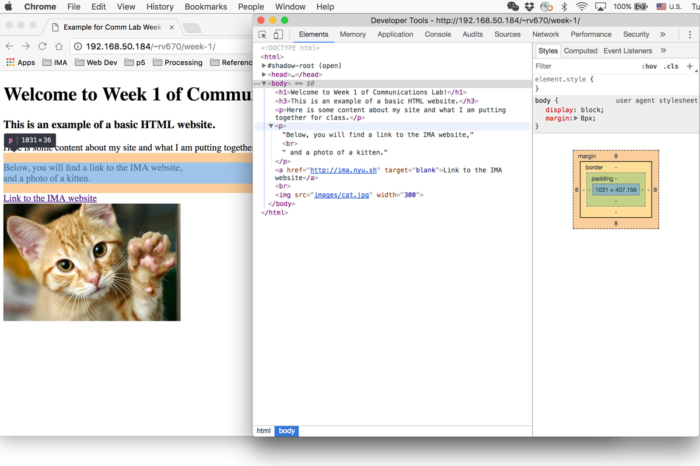
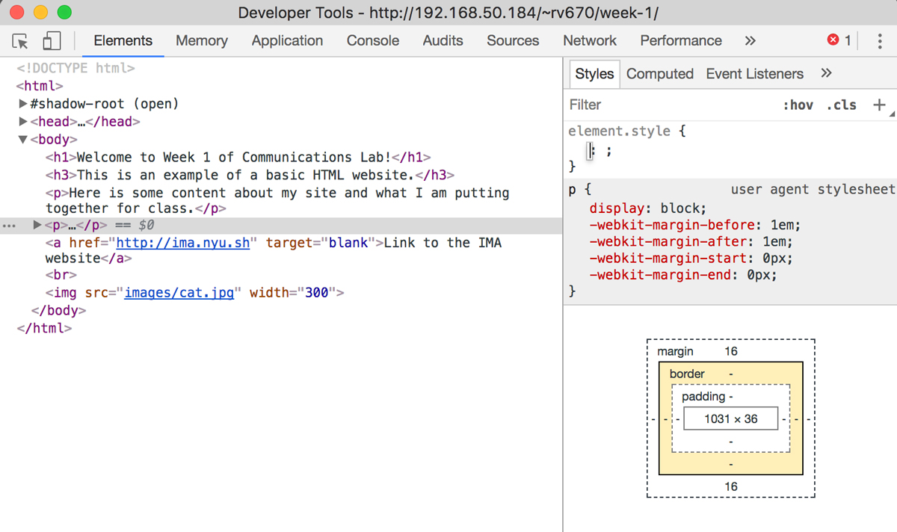
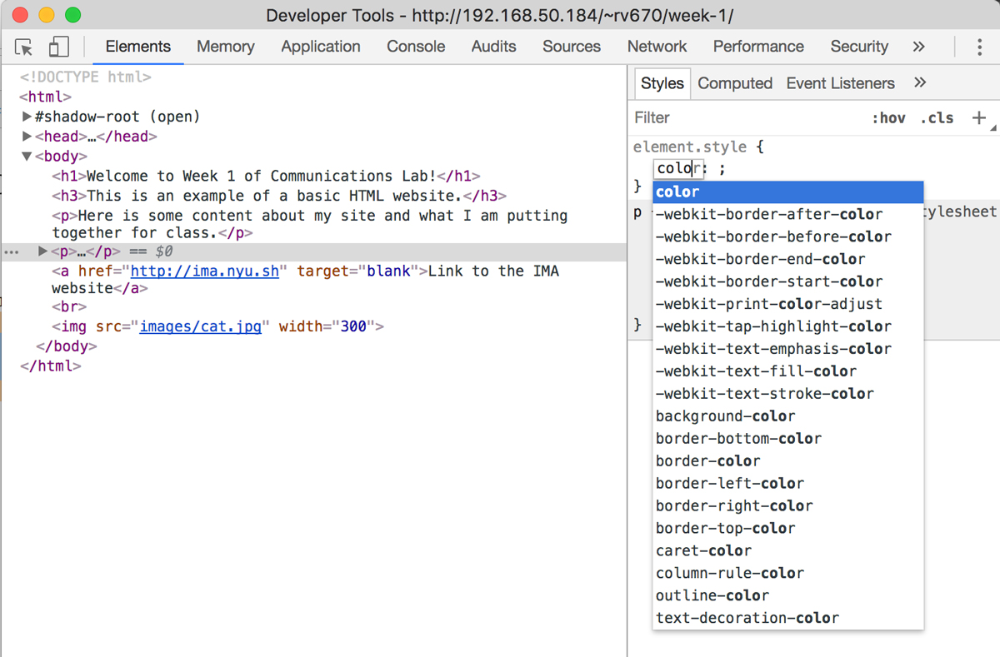

CSS Basics & Using Inspector
Finding Your Tool: Inspector
Before we review css, we are going to explore something that will help us throughout the semester. On every web browser, there is a tool called inspector that allows you to inspect all the elements that compose a web page. This means that you will be able to see the html and css codes of the web page, and it also gives you some room to play around. You will be able to apply changes to the code and immediately see visual changes that it may create. Let's see how to open this window on Chrome, Firefox and Safari, to see what it looks like and what we can do with it to learn and experiment with css.
Chrome:
Chrome is the most recommended when doing web development, one of the reasons being that the inspector tool is user-friendly. On Chrome, you can get to inspector by 1) going to View > Developer > Developer Tools on the menu, or 2) right-clicking and selecting Inspect.
Firefox:
On Firefox, you can get to inspector by 1) going to Tools > Web Developer > Inspector on the menu, or 2) right-clicking and selecting Inspect Element.
Safari:
Safari is a little different from the other two browsers, because you have to click a checkbox so we can see these developer tools. Go to Safari > Preferences on the menu and in the Advanced tab, check the Show Develop menu in menu bar option.
Once we have done the above step, we can now get to inspector by 1) going to Develop > Show Web Inspector on the menu, or 2) right-clicking and selecting Inspect Element.
Getting to Know Inspector
For the purpose of this workshop, I will be using Chrome to demonstrate how we can use inspector to learn and test css. But inspector works just about the same for all other browsers, so you shouldn't have too much difficulty following along even if you are not using Chrome.

When you pull up the inspector window, using any of the two methods shown in the previous section, you will see a window pop up, like in the image above.

You can change the location of this window by clicking on the "more" icon with three dots. There, you will be able to select your Dock side. The first option will make your inspector a separate window, and the rest three options will change which side of the browser the inspector window is attached to.
For now, we will focus on what is on the Elements tab of the inspector window. We will learn about how to use the Console tab for javascript soon as well. In the Elements tab, you will see that the left side of the inspector displays the html code, while on the right side shows the css of the selected html element. In the image above, I have clicked on the body html tag, so it shows the css associated with the body tag on the right side. As this website contains raw html code, it doesn't seem to have any special styling. However, an important thing to note here is that there is some default css that exists for the body html tag itself, which is:
body{
display: block;
margin: 8px;
}
Let's take this opportunity to review the syntax of css. First, we see the selector, body. This means that the css declarations inside of the curly brackets are for this particular selector, in this case, a html tag. Remember that we can use 3 different types of selectors: 1) html tags, 2) class name, 3)id name. If we had an html code like this:
<img class="grid-img" id="donut-img" src="img/donut.jpg">
then we can use the class name "grid-img" as our selector like this:
.grid-img{
width: 500px;
height: 400px;
}
and we can also use its id name as our selector like this:
#donut-img{
width: 1000px;
height: 800px;
}
Let me give an example of the different cases for using an html tag, class name and id name as your selector. Let's say that I am creating a web page with a lot of images. If I want all my images to have a uniform size, I will set this using the img html tag as my selector in my css. If I want to create a category of important images, and want to put a red border around them, I will create a class, maybe call it something like important-img, and use .important-img as my selector to set this style. Lastly, if I want to make an exception and use one particular image to be always fixed on the bottom right corner of my website (maybe it's my "move to top" button), I can do that by giving that particular image an id name (in this case, something like #move-top). The html and css code for this example scenario will look something like this:
html:
<img src="img/normal-img.jpg">
<img class="important-img" src="img/important-img.jpg">
<img src="img/normal-img.jpg">
<img class="important-img" src="img/important-img.jpg">
<img src="img/normal-img.jpg">
<img src="img/normal-img.jpg">
<img class="important-img" src="img/important-img.jpg">
<img id="move-top" src="img/move-top-img.jpg">
css:
img{
width: 500px;
height: 400px;
}
.important-img{
border-style: solid;
border-color: red;
}
#move-top{
width: 50px;
height: 50px;
position: fixed;
bottom: 0px;
right: 0px;
}
Now, let's look at the lines of code inside of the curly brackets. They have a syntax of:
css-property: value;
This is where we can use our new tool, inspector, to explore.
This is the same image that we saw before. Note that there is a section on my web page highlighted in blue, with two orange lines above and below. This section of my webpage is highlighted because my mouse is currently hovering over this particular part of html code inside my inspector. It also has a little indicator above that says "p | 1031 x 36". This means that the selected html code is of an html tag <p> and has width of 1031 pixels and height of 36 pixels at this particular browser size.

If you actually click on this part of your html code on your inspector, you will see the right side of the inspector window change to display the styles for this element. Right now, same as before, there are no particular styles given.
If you click on an empty space below where it says element.style, a blank template for a line of css declaration will appear. Let's try to change the color of this selected text.
Start typing inside the little text box that appears in place for the css property. Knowing that in order to change the color of the text, the given css property is color, as you type in the word, you will notice that it will inspector will try to auto-fill for you and also display options that contain the characters you have already typed before. Thus, you will be able to see that there is are many other css properties that you can set colors of, such as background-color and border-color.

If you hit tab after selecting the css property color, you will see that it also gives you a list of available values for this particular css property. For the color value in particular, it is possible to give it as hexadecimal or RGB, but the options that appear are the colors that can be referred to as a name.

I am going to choose the color red. You will see this particular section of text change its color from black to red immediately after you are done typing the word. A very important thing to note here is that ANY CHANGES DONE ON THE INSPECTOR ARE TEMPORARY. If you refresh the page, the changes you have made, in this case changing the color of text to red, will disappear. The inspector tool should be used for experimenting with css and a way of getting immediate visual feedback of what a particular css declaration does. If you want to actually apply this css style to your web page, you should copy the css code from inspector and save it to your local css file.
For more detailed information about css syntax, please read this w3schools' article. Generally, w3schools website is also a helpful resource in trying to figure out if there is a css property for what you want to do, and what it exactly does.